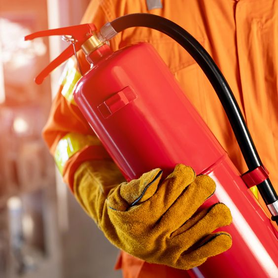

#1: Keep your flammable items in proper containers.When in possession of flammable items (ex: hairspray), make sure to store them in places wherein the temperature is cool. |
|
|  | #2: Always have a fire extinguisher with you.Make sure to keep a fire extinguisher at hand, especially in places near exists. |
#3: Be alert with nearby flames.If there are any open fires such as fireplaces, be careful to not get anything into it to avoid any accidents. |
|
#4: Frequently check your sources of heat.Check on sources of heat such as heaters, gas tanks, and such other objects that could possibly cause a fire. |
|
#5: Make sure to pay close attention to your kitchen when cooking.Cooking requires a heat source, with the stoves requiring real fire, so it'll be besto to pay extra attention to whatever is being made there. |
|
#6: Conserve your wires.Wires are very breakable, so keeping them in places where they wouldn't get tangled and break. |